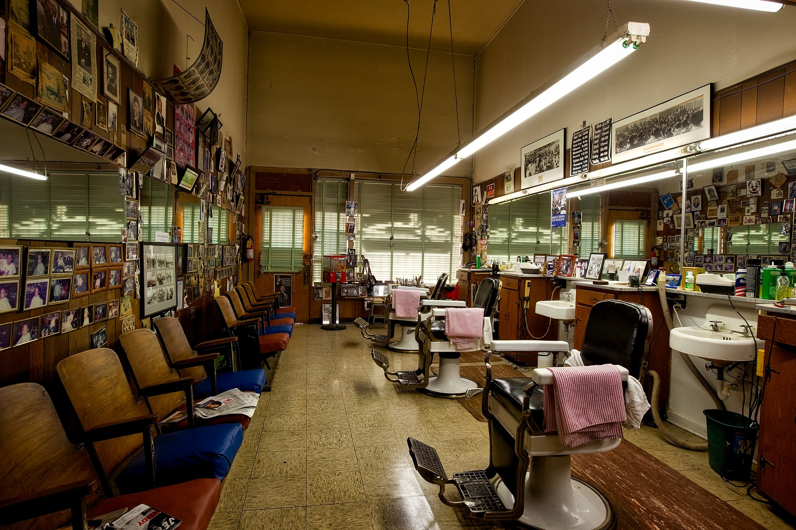

Nosso espaço
Av. Min. Laudo Ferreira de Camargo, 305 - Jardim Peri Peri, São Paulo - SP
Nossa história
Situada em um bairro animado de São Paulo, a Barbearia Retrovisor é muito mais do que um simples local para cortar o cabelo e fazer a barba. Desde sua abertura em 2015, a Retrovisor conquistou o coração dos moradores da região com sua abordagem única e atmosfera acolhedora. Recebendo o reconhecimento como a melhor barbearia da cidade de São Paulo por três anos consecutivos pelo site "Os 05 Melhores", a Retrovisor orgulha-se de sua reputação de excelência e compromisso com seus clientes. Inspirada nas barbearias clássicas dos anos 1940, o ambiente da Retrovisor é um verdadeiro mergulho na nostalgia. Cadeiras de couro confortáveis, espelhos ornamentados e detalhes vintage dão ao espaço uma sensação autêntica e acolhedora. A equipe de barbeiros, com anos de experiência, não apenas domina sua arte, mas também cria um ambiente descontraído, onde os clientes se sentem em casa desde o momento em que entram. Na Retrovisor, cada visita é uma jornada no tempo, combinando o melhor do passado com um toque de modernidade, tudo em um ambiente acolhedor e familiar que cativa os sentidos e a imaginação.